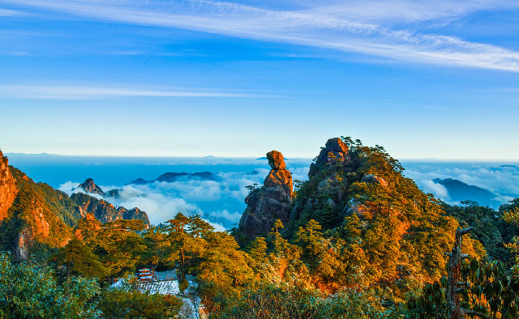

国家级风景名胜区、世界自然遗产、世界地质公园、国家5A级旅游景区、国家绿色旅游示范基地——三清山位于江西省上饶市东北部，因玉京、玉虚、玉华三峰峻拔，宛如道教玉清、上清、太清三位最高尊神列坐山巅而得名。
联合国科教文组织世界遗产委员会认为：三清山风景名胜区展示了独特花岗岩石柱和山峰，栩栩如生的花岗岩造型石与丰富的生态植被、远近变化的气候奇观相结合，创造了世界上独一无二的景观，呈现了引人入胜的自然美。
景区总面积229.5平方公里，主峰玉京峰海拔1819.9米。景区内千峰竞秀、万壑奔流、古树茂盛、珍禽栖息，终年云缠雾绕，充满仙风神韵，被誉“世界最美的山”。同时，她又是一座经历了千年人文浸润的道教名山，三清福地景区承载着三清山厚重的道教文化，平均海拔约1500 多米， 迄今1600 余年，道教历史源远流长，共有宫、观、殿、府、坊、泉 、池、桥、墓、台、塔等古建筑遗存及石雕、石刻230 余处。这些古建筑依“八卦”精巧布局、藏巧于拙，是研究我国道教古建筑设计布局的独特典范，被誉为“中国古代道教建筑的露天博物馆”，现为国家级文物保护单位。
习近平总书记曾亲临江西考察，指出：江西是个好地方，生态秀美，名胜甚多，点赞"三清天下秀"。
